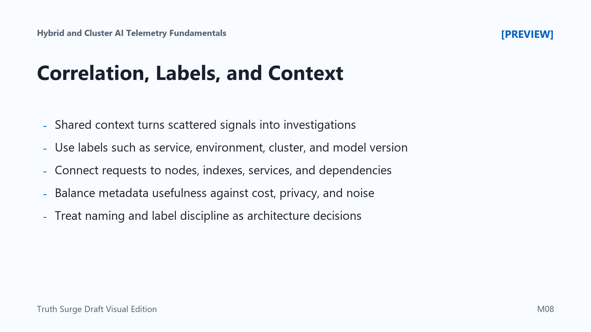

Correlation, Labels, and Context
Connecting to LMS... Progress: in progress

Narration
Telemetry becomes much more useful when signals share consistent context. A metric that says latency increased is helpful. A metric that also includes the service, environment, cluster, namespace, workload, model version, deployment version, tenant class, and route is far more actionable. Labels and identifiers turn isolated signals into an investigation path.
Important context may include service name, environment, cluster, region, namespace, node, workload, deployment version, model name, model version, request class, data source, tenant, request ID, trace ID, and correlation ID. Not every signal needs every label. The design decision is to include the labels that help teams answer likely questions without creating uncontrolled cost, privacy, or cardinality problems.
Correlation helps teams connect a slow user request to a specific service, model deployment, GPU node, retrieval index, or downstream dependency. When a request ID appears in logs, traces, events, and selected metrics, teams can move from symptom to cause with less guesswork. This is especially important in hybrid systems where ownership may cross teams and infrastructure boundaries.
Too little metadata makes investigation slow. Too much ungoverned metadata creates noise, cost, and privacy risk. Naming conventions, label discipline, and correlation rules should be treated as architecture decisions, not afterthoughts. Good context makes telemetry explainable. It gives responders enough shared language to ask better questions during routine operations and during incidents.